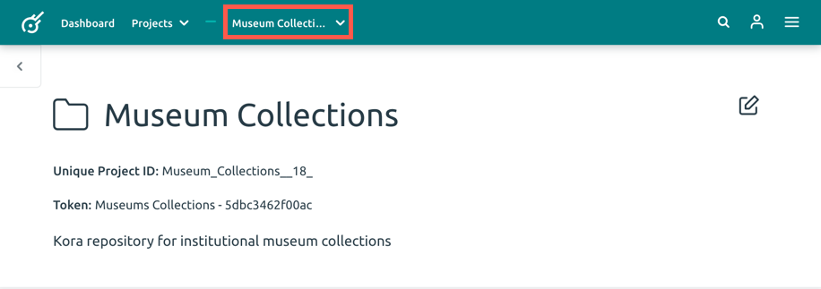
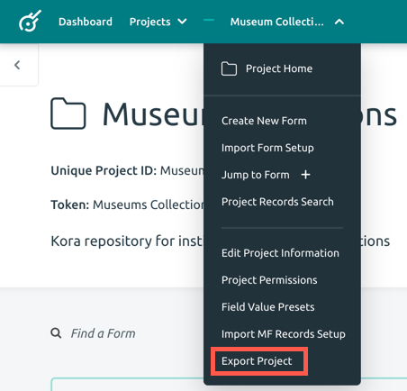

Exporting a Project
Exporting a project allows you to save the project as a .kProj file onto your computer. Another benefit of exporting a project is that it allows you to import that project into Kora as a new project, so you can use the forms and fields already created.
Follow the steps below to export a project.
-
From the project you would like to export, click the name of the project in the top menu bar. This will open a dropdown menu.

-
In the dropdown, select the last option, Export Project. This will automatically start the download of the project onto your computer as a .kProj filetype.

Visit the Importing a Project Guide for step-by-step instruction on how to import your project into Kora.